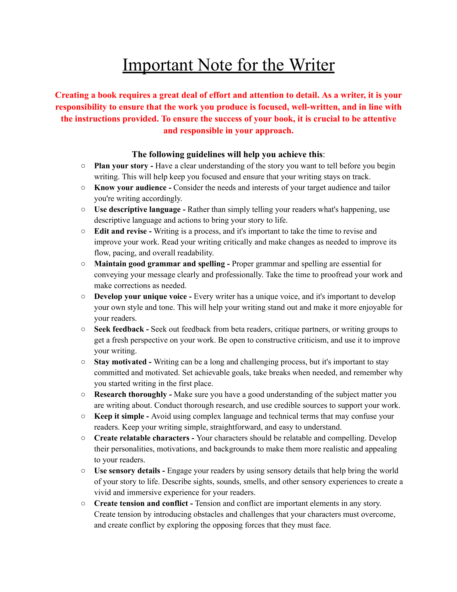
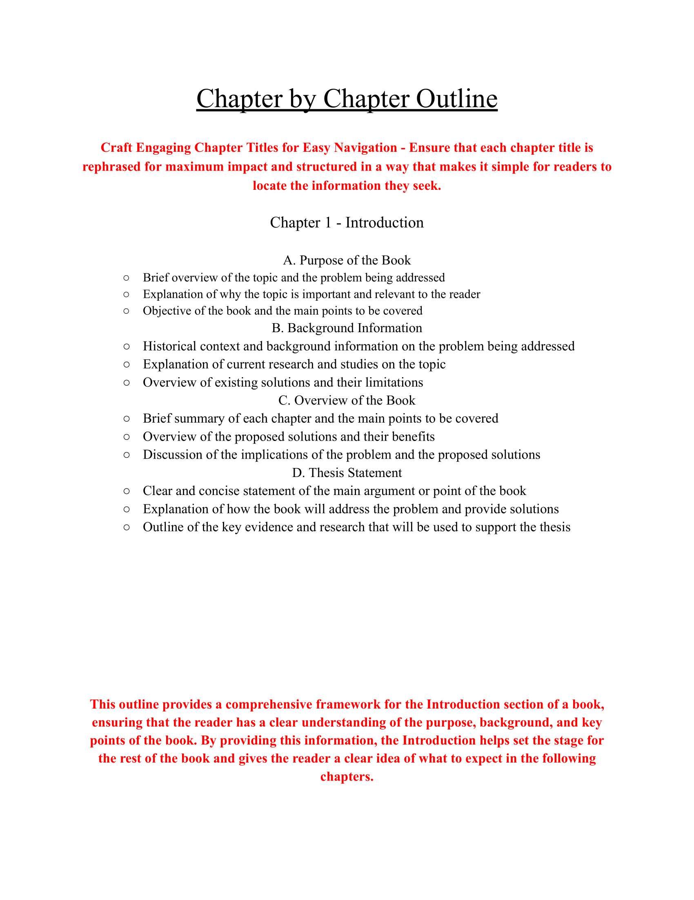
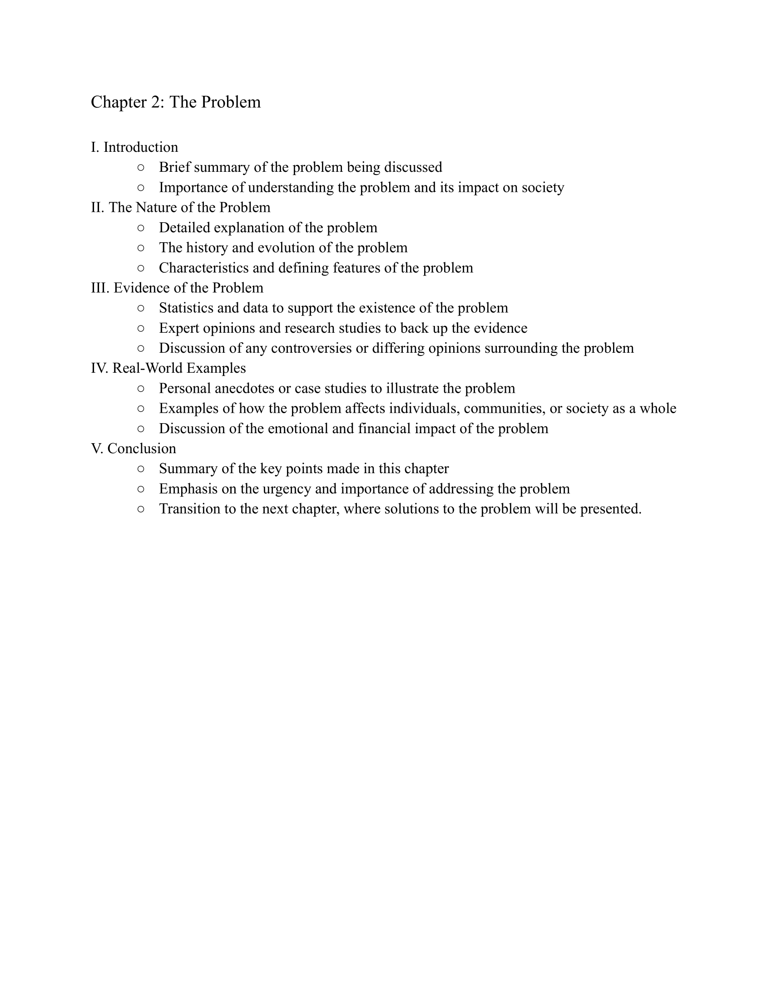
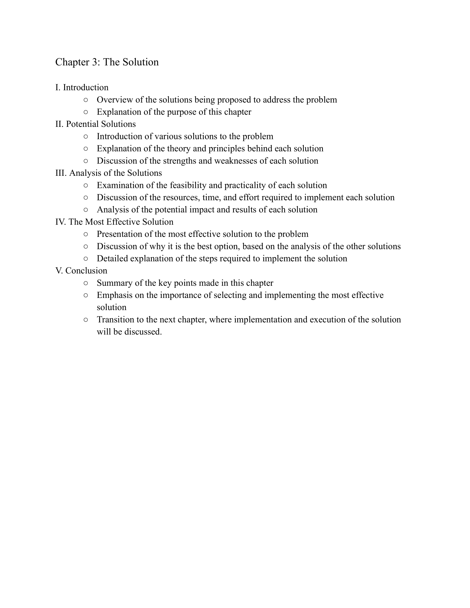
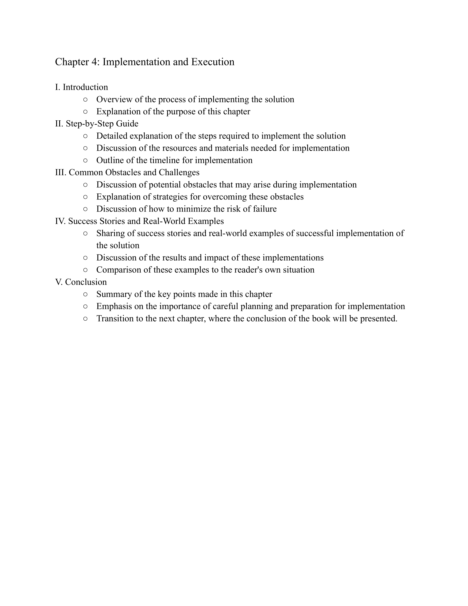
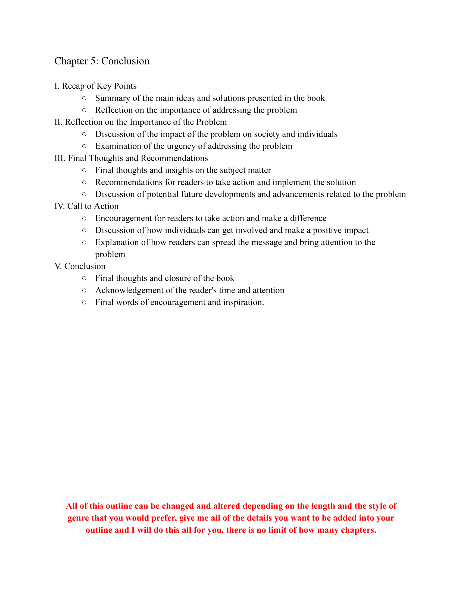

My template on book outlining
Just my template, this can be all changed
The image displayed above is an informative visual representation that displays the different types of outlines authors can choose from when planning their books. Each outline type is unique and offers a distinct structure and framework for organizing the ideas, concepts, and themes presented in the book. The purpose of this list is to provide authors with guidance and direction when developing the structure of their books.
Having a structured outline can be highly beneficial for authors, as it enables them to plan and organize their ideas effectively. This is particularly important when writing a book, as it can be challenging to keep track of multiple plotlines, characters, and themes without a clear framework in place. With a structured outline, authors can ensure that their book is well-organized, easy to follow, and engaging for readers.
When it comes to writing a book, it's essential to have a clear idea of what needs to be included to keep the audience engaged and interested in reading more. This is where a layout or outline can be incredibly helpful in guiding the author on what to include in their book and how to structure it to maintain the reader's attention.
By using a layout or outline, the author can break down their writing into manageable chunks, making it easier to stay organized and focused. It can also help them identify any potential issues or gaps in their story or argument, allowing them to make necessary revisions and improvements.
The bullet-pointed list displayed above serves as an excellent starting point for authors who are seeking guidance on how to structure the first chapter of their book. This structure provides a clear and concise framework that can help authors to organize their ideas and concepts effectively, and to ensure that their book gets off to a strong start.
It's important to note, however, that this structure is by no means set in stone. Depending on the length and complexity of the book, authors may need to modify and adapt the structure to suit their particular needs. For instance, if the book is a long and complex work of fiction, the first chapter may need to be broken down into multiple sections, each of which focuses on a different aspect of the story.
To create a book that captivates and interests its readers, it is important to introduce a problem that intrigues them. By adding a sense of mystery or challenge at the beginning of the story without entirely disclosing its details, readers will be motivated to uncover the solution. By uncovering who is involved, how the issue can be resolved, or if that is even possible, this approach can keep readers engaged and fully invested in the narrative.
It is noteworthy that when the problem is introduced in a book, it is influenced by the book's length. If the book is long, the problem might be introduced later after the reader has developed a connection with the characters and the world. On the other hand, in a shorter book or a 5-chapter format like this, it is crucial to introduce the problem early on to keep the reader interested in what lies ahead.
A solution found in a book is crucial as it provides a conclusion to the story that fulfils the reader's inquisitiveness. If a solution is absent, the reader may end up with unanswered queries and unresolved situations leading to an unsatisfactory reading encounter.
A well-crafted solution can also tie together different plot threads and character arcs, providing a sense of coherence and completeness to the story. It can also leave a lasting impression on the reader, making the book memorable and impactful. A good solution should be logical, believable, and provide a sense of resolution to the problem introduced in the story.
Effective implementation involves the use of strong writing skills, such as pacing, dialogue, and descriptions, to bring the story to life. The execution requires attention to detail, consistency, and the ability to create a sense of immersion for the reader. A well-executed story can keep readers engaged and invested from beginning to end, leaving a lasting impression and potentially even inspiring them to recommend the book to others.
In summary, the implementation and execution of a story idea are vital because they determine how well the story is communicated to the reader. Effective implementation requires strong writing skills, while execution requires attention to detail and consistency to create a sense of immersion. A well-executed story can keep readers engaged and invested, leaving a lasting impression and potentially even inspiring them to share the book with others.
The conclusion of a book is critical as it provides a sense of closure to the story, resolves the conflicts and issues that were introduced throughout the plot, and ties up any loose ends. A well-crafted conclusion can also leave a lasting impression on the reader and potentially even inspire them to read more books from the same author.
A satisfying conclusion can also leave the reader with a sense of emotional fulfillment, creating a memorable reading experience. It's essential that the conclusion is consistent with the rest of the book, and it doesn't feel rushed or out of place. When executed well, the conclusion can be the most impactful part of the book, and it can leave a lasting impression on the reader, leading to positive reviews and word-of-mouth recommendations.